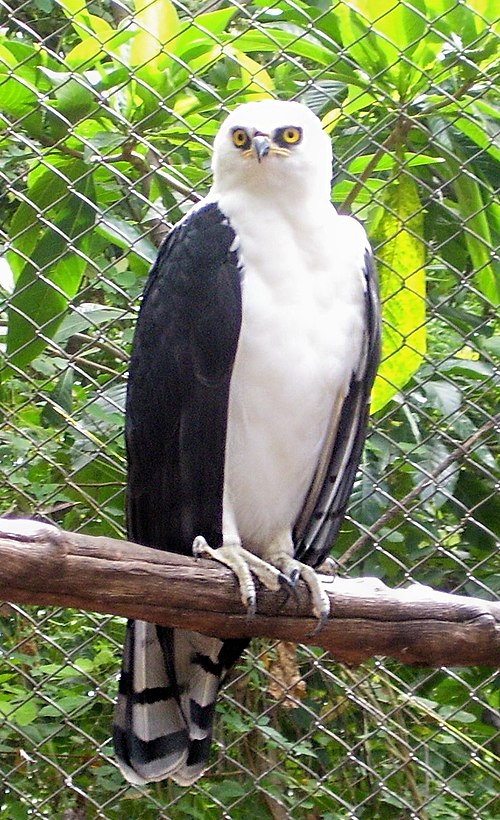
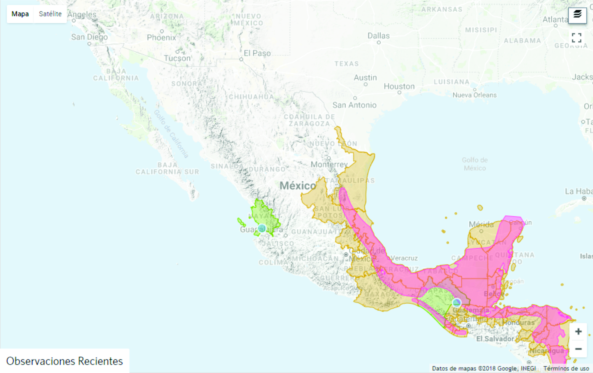

| Taxonomía | |
|---|---|
| Reino: | Animalia |
| Filo: | Chordata |
| Clase: | Aves |
| Subclase: | Neornithes |
| Orden: | Accipitriformes |
| Familia: | Accipitridae |
| Subfamilia: | Accipitrinae |
| Genero: | Spizaetus |
| Especie: | S.melanoleucus |
Descripción:
Mide de longitud 50 a 70 cm, pesando entre 600 y 900 g; el espécimen adulto cabeza, cuello, zona ventral y forro de alas blanco; lores, región orbital y cresta occipital corta negros. Espalda negruzca, remeras grisáceas, claro en el envés con barras y puntas negras, cola gris clara y 4 bandas negras delgadas. Patas amarillas bien emplumadas, cera y ojos amarillos. El joven con espalda parduzca grisácea.
Entre la dieta habitual de todas se va a encontrar el conejo, ya que este mamífero se encuentra prácticamente en todos los bosques y zonas en las que el águila vive, y dado su facilidad de reproducción y su abundancia, serán una presa fácil generalizándose para todas estas rapaces. Como último recurso alimentario, el águila va a alimentarse de carroña, aunque no es lo más habitual.
Hábitat:
Es una especie de ave Accipitriforme de la familia Accipitridae que vive en América, desde México, América Central, Sudamérica hasta el norte de Argentina, desde el nivel del mar hasta 1.500 msnm.

Situación actual: